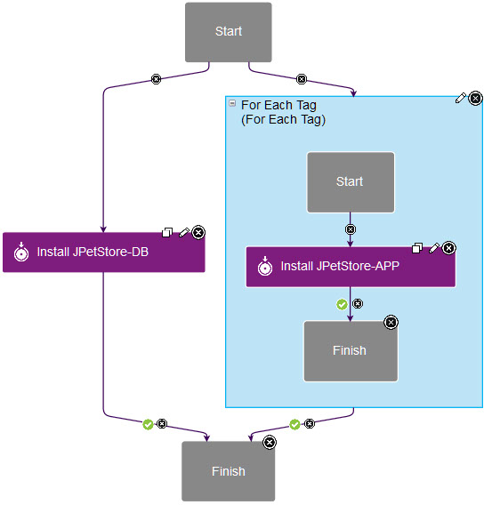
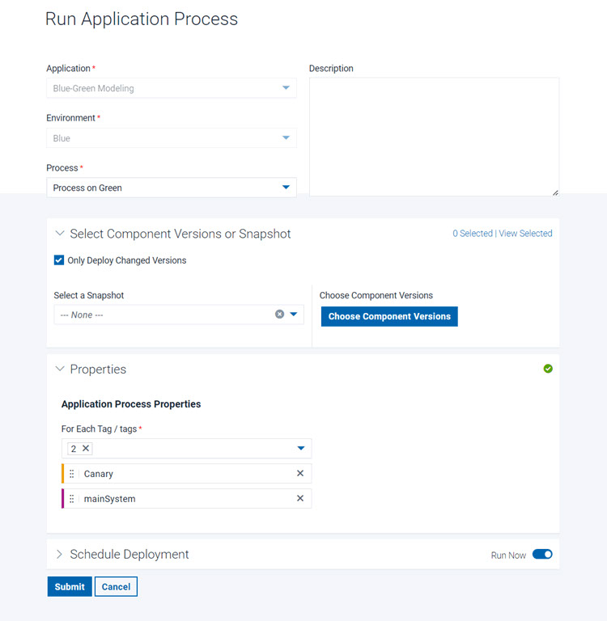
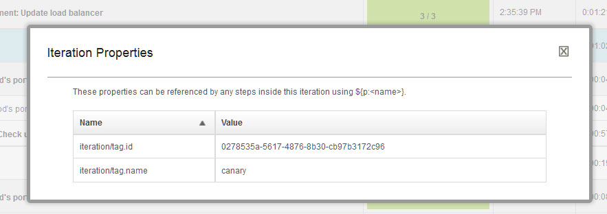
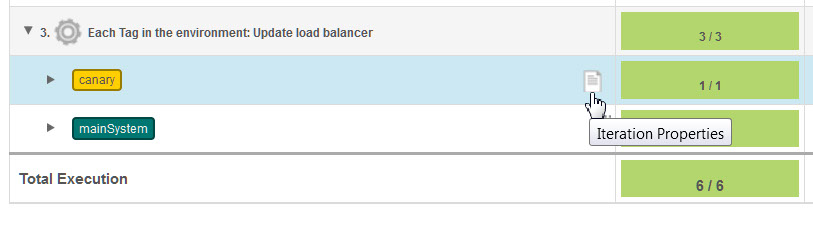

For Each Tag
This step iterates over resource tags in application processes.
Applications, components, and generic processes share some process steps. This step applies only to application processes, including application processes that are associated with application templates.
Like the For Each Agent step, this step creates an iteration container for subprocesses. You specify one or more resource tags, and the order of those resource tags, and the step runs the subprocess once for each resource tag. The workflow in the container has its own context, and its own start and finish steps, as shown in the following figure. You can use any application process step in the subprocess. An iteration container can connect to any step, even other iteration containers, but you cannot include other iteration containers within an iteration container.


| Field | Description |
|---|---|
| Name | A name for the iteration container. |
| Tags | A list of resource tags to use in the container. The subprocess runs once for each resource tag. You can order the resource tags by dragging and dropping them. |
| Max Concurrent Tags | The maximum number of tags for which to run the
subprocess at a time. To run the subprocess on all of the tags at the same time,
specify -1. To run the subprocess on only a few of the tags at a
time, as in blue/green deployments or rolling deployments, specify an integer. The server attempts to resolve the value to an integer. If the value does
not resolve to an integer, then the |
Iteration properties
The For Each Tag step has properties, called iteration properties, that can be used to reference
steps within the iteration context. By using these properties, for example, you can identify
the current agent within the context. To reference iteration properties, use the following
format: ${p:iteration/<name>}. For example, the current tag name is in
the property ${p:iteration/tag.name.


- Open the log for the application process request by clicking .
- Expand the container step and, next to one of the iterations, click Iteration Properties.